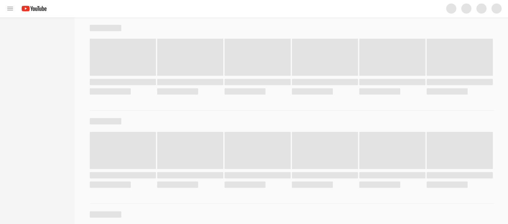
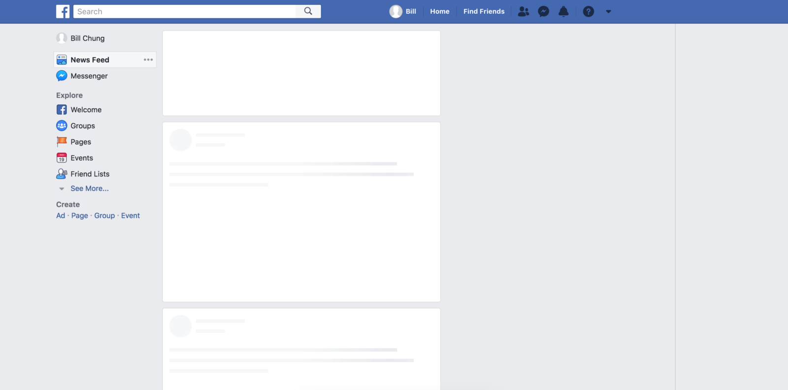

상반기 월간 리뷰
2019. 5. 9
서비스 개발1팀 UI파트 - 김재호
The Agenda
- Observer API
- 무한 스크롤 (InfiniteGrid, Persist)
- 스켈레톤 스크린 (Skeleton Screen)
Observer API
옵저버 패턴
한 객체의 상태가 바뀌면 그 객체에 의존하는 다른 객체들에게
그 정보를 알려주는 디자인 패턴 (일대다 의존성)
ex) 엑셀 표 - 사용자가 스프레드시트의 값 변경 → 표, 그래프, 차트에도 변화
이때 모든 요소들이 동시에 즉각적으로 변화

setInterval API
이전에는 setInterval을 사용하여 변경사항이 발생했는지 반복적으로 실행
타이머를 동시에 여러 개 사용 시 웹 사이트의 성능을 크게 저하
setInterval(function() {
//...
}, 5000); //5초 마다 실행
JS Observers
최신 브라우저에서 제공하는 옵저버
- MutationObserver - 엘리먼트의 속성 변경 감시
- IntersectionObserver - 뷰포트와 대상 엘리먼트의 교차 감시
- ResizeObserver - 엘리먼트의 너비, 높이 변화 감시
- PerformanceObserver - 프로세스 성능 모니터링
- ReportingObserver - 웹 사이트의 표준 및 정책 준수 현황 감시
MutationObserver
DOM 요소를 감지하면서 변경 사항이 있을 경우 콜백 실행
노드가 새로 추가되거나 제거, 속성, 텍스트 내용 변경을 모니터링
다국어 프로젝트
- 무료로 제공되는 구글 웹 사이트 번역기 사용
- 개발에 필요한 api가 별도 지원이 안되는 단점
- 사용자가 언어 변경 후, 변역이 완료되면 callback 함수 필요
- 특정 엘리먼트를 감지하고 있다가 변경이 일어나면
이전 텍스트와 현재 텍스트 비교
이때 변경 감지를 위해 setInterval 대신 Mutation Observer API 사용
사용 방법
DOM 변경을 감지했을 때 처리할 콜백함수를 가진 옵저버 생성
// MutationObserver 인스턴스 만들기
var observer = new MutationObserver(callback);
감시 하기
감시할 DOM 요소와 내용을 설정 후 옵저버에 전달
// 감시할 DOM 요소
var target = document.getElementById('transObserver');
// 감시할 내용 옵션
var config = {
childList: true, // 자식요소 font 태그 생성 감지
};
// 모니터링 시작
observer.observe(target, config);
감시할 내용 옵션
- childList: 대상 노드의 자식 요소 (텍스트 포함)의 추가 및 제거
- attributes: 대상 노드의 속성 변경
- characterData: 대상 노드의 텍스트 값에 대한 변경 사항
- subtree: 대상 노드 및 대상요소의 자식 자손까지 모두 감시
- attributeOldValue: 속성 값이 변경 전의 값
- characterDataOldValue: 요소 내부 텍스트를 변경할 경우 이전 값
- attributeFilter: 모든 속성을 관찰 할 필요가 없는 경우 속성명들을 배열 정의
callback
var callback = (mutations, observer) => {
mutations.forEach(mutation => {
var newValue, oldValue, language;
// type: 어떤 종류가 변경되었는지 확인
// addedNodes: 추가된 자식 노드
if (mutation.type === 'childList' && mutation.addedNodes.length) {
// target: 대상 태그
newValue = mutation.target.innerText;
oldValue = mutation.target.getAttribute('data-default-txt');
if (newValue !== oldValue) {
// 언어변경 callback
} else if (newValue == oldValue) {
// 한국어
}
}
});
};
placeholder 번역 대응
placeholder 값을 가져와 임시 dom 생성 후 옵저버로 감시
번역 완료 후, 변경된 언어로 placeholder 변경
$('[placeholder]:not(.translated)').each(function(){
var welTarget = $(this);
var sText = welTarget.attr('placeholder');
welTarget.after(''+ sText +'').addClass('translated');
observer.observe(welTarget.next('.trans_placeholder').get(0), {childList: true});
});
// observer callback
mutation.target.prev('[placeholder].translated').get(0).placeholder = mutation.target.innerText;
브라우저 지원
지원되지 않는 브라우저 Polyfill 사용
IntersectionObserver
타겟 엘리먼트와 뷰포트가
교차하는 부분의 변화를 비동기적으로 관찰하는 API
무한 스크롤 이미지 레이지 로딩 시 IntersectionObserver API 사용
기존 scroll 이벤트 문제
window에 스크롤 이벤트를 등록하고
엘리먼트가 위치에 도달했을 때 실행할 콜백함수 등록
- 스크롤 이벤트는 동기적으로 실행되기 때문에 메인 스레드에 영향
- 스크롤할 때마다 이벤트가 끊임없이 호출
- Debouncing, Throttling을 통해 이러한 문제 개선
$(window).on('scroll', function() {
//1. 각 이미지가 뷰포트에 존재하는지 확인
//2. 이미지 로드
});
debounce, throttle
스크롤 이벤트 최적화 (함수 호출 빈도 조정)
뷰포트 안에 존재하는지 확인
getBoundingClientRect() 함수 사용
이 함수는 리플로우, 레이아웃 현상이 발생한다는 단점
function isElementInViewport (el) {
var rect = el.getBoundingClientRect();
return (
rect.top >= 0 &&
rect.left >= 0 &&
rect.bottom <= (window.innerHeight || document.documentElement.clientHeight) &&
rect.right <= (window.innerWidth || document.documentElement.clientWidth)
);
}
스크롤 시 화면에 들어오는 요소마다 위치를 체크해주는 계산을 해야 하며,
이러한 모든 배치 관련 계산이 메인 쓰레드에서 수행

사용 방법
const options = {
root: null,
rootMargin: '0px 0px 0px 0px',
threshold: 0
};
// 기본구조는 콜백함수와 옵션
const observer = new IntersectionObserver(callback, options);
root
- 교차 영역의 기준이 될 root 엘리먼트
- 이 속성을 정의하지 않으면 자동으로 브라우저 뷰포트가 사용

rootMargin
- root 엘리먼트의 마진값. 이 값에 따라 교차 영역이 확장 또는 축소
- css에서 margin을 사용하는 방법으로 선언, 축약 가능, px과 %로 표현

threshold
이벤트 발생 빈도를 늘리려면 threshold 옵션을 사용
- 0.0부터 1.0 사이의 숫자 혹은 이 숫자들로 이루어진 배열
- 1.0이면 root요소 내부에 100% callback
- 0.5이면 root요소 내부에 50%일 때 callback
다음과 같이 인수를 설정하면 교차 영역이 20% 변할 때마다 callback
threshold: [0, 0.2, 0.4, 0.6, 0.8, 1.0]

callback
타겟 엘리먼트가 교차되었을 때 실행 함수 (메인 쓰레드에서 실행)
타겟이 화면에 완전히 표시 되면 active 클래스 추가
const callback = (entries, observer) => {
entries.forEach(entry => {
// entry는 감지된 엘레멘트의 정보
if (entry.isIntersecting && entry.intersectionRatio == 1 ) {
entry.target.classList.add('active');
} else {
entry.target.classList.remove('active');
}
});
};
entry 객체
- - rootBounds
- root 엘리먼트 정보
- - boundingClientRect
- target 엘리먼트 정보
- - intersectionRect
- 교차된 영역 정보
- - intersectionRatio
- 교차하는 영역 비율
threshold와 같이 0.0 ~ 1.0 값 - - isIntersecting
- target이 교차 영역에 있으면 true
그 외는 false - - target
- target 엘리먼트
- - time
- 교차가 기록된 시간

대상 추가
일단 관찰자가 만들어지면
옵저버가 감시 할 수 있도록 목표 요소를 전달
// 대상 요소는 root 요소의 자식이어야 됨
// Single element
const target = document.querySelector('#item');
observer.observe(target);
// 여러 대상을 추적해야하는 경우 각 대상을 개별적으로 추가
// Multiple elements
const images = document.querySelectorAll('.lazy');
images.forEach((el) => {
observer.observe(el);
});
Methods
- observer.observe(targetElement)
- 타겟 엘리먼트에 대한 IntersectionObserver 등록 (감시 시작)
- observer.unobserve(targetElement)
- 하나의 대상 요소 감시을 중지하도록 지시
- observer.disconnect()
- 다수의 엘리먼트를 감시하고 있을 때, 모든 관측을 중지하도록 지시
- observer.takerecords()
- 교차하는지 여부에 관계없이 모든 감시 대상 목록을 반환
비동기적으로 실행, 메인 스레드에 영향을 주지 않으면서 변경 사항 감시
getBoundingClientRect()를 호출한 것과 같은 결과

브라우저 지원
지원되지 않는 브라우저 Polyfill 사용
IntersectionObserver가 현재 브라우저에서 사용 가능한지 확인 후
그렇지 않으면 기본 동작 사용
if (!('IntersectionObserver' in window)) {
Array.from(images).forEach(image => preloadImage(image));
} else {
observer = new IntersectionObserver(callback, options);
images.forEach(image => {
observer.observe(image);
});
}
무한 스크롤
기능 정의

- 스크롤이 맨 아래에 도달하면 다음 데이터를 append 하는 방식
- DOM이 계속 쌓이는 형태 → 화면에 보이는 DOM만 유지
- 뷰포트 밖 요소를 제거함으로써 성능향상
- 뒤로가기(히스토리백) 시 이전 상태 유지
egjs 라이브러리
- 네이버에서 제공. 인터랙티브한 컨텐츠를 만드는데 특화된 라이브러리
- Jindo 프레임워크 부터 쌓인 노하우를 바탕으로 개발
- jQuery, React기반
- 현재 네이버 쇼핑, 검색, 스포츠등 서비스에 적용
- - InfiniteGrid (v3.5.3)
- 레이아웃 유형에 따라 내용을 포함하여 카드 요소를 무한대로 정렬하는데 사용되는 모듈
- - Persist (v2.2.1)
- 히스토리 탐색 중에 지속 된 데이터를 처리하기위한 캐시 인터페이스를 제공
PC 해피바이러스
최대 400개의 상품 → 1000개 상품 대응
- egjs는 IE9부터 지원
- 하위 브라우저(IE8)를 어떻게 대응할 것인가?
- 스크롤 시 뷰포트의 상품을 체크하는 스크립트, 스크롤이 더 느려지고 버벅거림 성능저하
- DOM이 계속 쌓이는 기존 방식으로 분기처리
모바일 카테고리
- PC와 동일하게 작업 진행
- 해피바이러스와는 다르게 상품 수가 상당히 많음
- 세션스토리지 이슈
- 이미지 로딩 이슈
세션스토리지 이슈
상품 클릭 시 이제까지 추가된 모든 페이지 데이터 저장
한 페이지당 80개 상품 * 20 페이지 = 1600개의 상품 정보

세션스토리지(5MB)의 경우 브라우저 프로세스, 메모리 크기에 의존
10페이지 이후 상품 클릭 시
현재 무한 스크롤 리스트 정보를 저장하는데 있어서 에러 발생

클릭한 상품 페이지를 기준으로 위 아래 페이지 데이터만 저장
80개 상품 * 최대 3 페이지 = 240개의 상품 정보

스크롤 시 위 아래로 데이터 추가 가능하도록 대응

이미지 로딩 이슈
데이터 요청 시점에 80개의 상품 이미지들 한번에 불러온다는 것
페이지를 그려낸 뒤에도 연속적으로 네트워크 호출이 발생
로딩된 이미지가 배치되면서 리플로우(레이아웃) 발생
리플로우: 노드의 크기, 위치가 변경되어
현재 레이아웃의 일부 또는 전체를 다시 계산하는 과정

지연 로딩 (Lazy Loading)
이미지를 처음부터 불러오는 게 아니라
사용자가 스크롤을 해서 이미지 엘리먼트가 화면에 등장하는 순간 로딩 시작
모든 이미지를 한번에 불러올 필요가 없어 성능 개선 유용
IntersectionObserver API 사용
이미지 지연 로딩 적용한 결과


스켈레톤 스크린
로딩 인디케이터
웹페이지를 그리기 전, 서버를 거치는 과정에서 유저, 상품, 주문 정보 등
데이터를 DB 또는 외부 API 호출
웹브라우저는 데이터 로딩이 완료될 때까지 대기
사용자에게 기다려 달라는 의미지만 텅빈 화면을 오래 봐야 하는 단점

스켈레톤 스크린
페이지의 뼈대에 해당하는 빈 레이아웃을 먼저 보여주고
데이터를 받는 대로 부분적으로 채워가는 방식
YouTube, Facebook 화면 로드 상태
 데이터 지연 로딩
가장 중요한 UI 영역을 먼저 제공하고,
중요도가 떨어지는 영역을 이후 제공해 체감 속도 향상
지연이 필요한 영역의 데이터 호출 로직을 서버 controller에서 제거
클라이언트 단에서 필요한 시점에 API를 호출하는 방식으로 전환
자연스러운 UX를 위해 지연되는 시간 동안 스켈레톤 스크린 적용